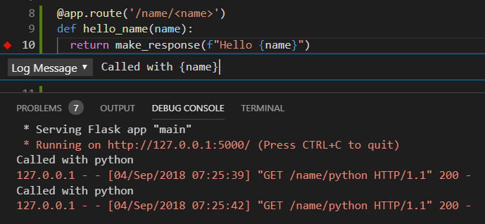

Где применяется язык Python? Сферы применения
Благодаря проектировке Python, он способен решать частые задачи, регулярно появляющиеся перед разработчиками. В статье мы расскажем про основные сферы его применения. Язык задействуется в широчайшем спектре сфер, к примеру:
- управление различными компонентами ПО, в том числе разработанные на другом языке;
- для написания отдельных приложений.
Системное программирование
Не секрет, что в Python используются современные интерфейсы для манипуляции службами ОС Windows, Linux и т. п. За счёт этой способности, язык является лучшим инструментом для реализации портативных программ. Часто используется в ходе разработки приложений (командных оболочек) из сферы системного администрирования. Несколько базовых функций, доступных к выполнению посредством Python:
- поиск файлов по каталогам;
- открытие файлов;
- запуск сторонних программ;
- возможность выполнять вычисления, перенаправляя их на разные потоки и т.п.

Дополнительным преимуществом является полное соответствие основной библиотеки Python к требованиям POSIX. С учётом поддержки стандартных инструментом ОС, Python является одним из лучших языков
Графический интерфейс
Python совмещает лёгкость работы и высокую производительность работ, что делает язык идеальным решением для создания графических интерфейсов. Язык совмещает весь набор возможностей объективно-ориентированного интерфейса tkinter. С его помощью достаточно легко реализовать портативный графический интерфейс, соответствующий стилю операционной системы.

На основании API разработаны высокоуровневые инструменты типа: Dabot и PythonCard. К каждой библиотеке есть вспомогательные инструменты, позволяющие создавать графический интерфейс эффективнее и проще:
- для QT – PyQT;
- для GTK – PyGtk;
- для MFC - PyWin32;
- для .NET – IronPython;
- для Swing – Jython (является Java реализованным языком Python).
Веб-сценарии
Уже сегодня для языка разработано множество полезных инструментов от сторонних разработчиков, помогающих реализовать непосредственно на Python приложения по работе с сетью. Как говорится, Google в помощь. Для примера, с помощью инструмента HTMLGen, способствующего созданию HTML-кода страницы, можно писать классы под HTML прямо на Python. Посредством пакета mod_python, легко запускать сценарии под Apache и обеспечивать работоспособность шаблонов в системе Python Server Pages. Удобно, что в Jython реализована бесшовное внедрение Python/Java кода и поддерживаются апплеты серверов, доступные к выполнению на клиентской стороне.
Нельзя забывать про наличие у Python целых пакетов для программирования веб-ресурсов, среди которых:
- TurboGears;
- Zope;
- Django;
- web2py;
- Pylons;
- WebWare.
Интеграция дополнений
Лишь некоторые компоненты из огромного списка:
- используя SIP и Swing, удаётся в автоматическом режиме создать код для автоматизации ручных действий по связке компилируемых дополнений на Python. Это упрощает последующее применение компонентов в сценариях;
- посредством Cython удаётся смешивать одновременно 2 многофункциональных языка: C и Python.
Работа с БД
Сегодня для Python реализован доступ к большинству базовых реляционных БД. Также в среде Python присутствует независимый программный интерфейс БД, обеспечивающий лёгкий доступ к БД посредством SQL-запросов прямо из сценариев. Разработчики Python пошли по пути унификации доступа к любым БД.
Для иллюстрации возможностей, с помощью переносного API для унификации запросов, код практически без доработок может быть использован для БД MySQL и Oracle одновременно. Работы по перестроению минимальны – лишь изменение низкоуровневого интерфейса.
Сложные вычисления
Под Python написано расширение NumPy, предназначенное для математических подсчётов. Расширение может работать с массивами данных, интерфейсами уравнений из стандартной библиотеки и т. п. После установки NumPy, язык интегрируется с библиотеками математических формул, разработанных на любых компилируемых языках.
Расширение делает Python сложны и в то же время удобным инструментом для программирования с использованием сложных математических вычислений. В большинстве случаев Python с рассматриваемым расширением способен стать достойной заменой C++ и FORTRAN.
Более того, вспомогательные инструменты мат. вычислений включают функцию создания анимации и прорисовки 3D объектов. Также помогают выполнять параллельные вычисления и этим список возможностей не заканчивается. Пример, одни из популярнейших дополнений, ScientificPython и SciPy имеют отдельные библиотеки, предназначенные для выполнения научных исчислений, которые частично задействуют расширение NumPy.
Статья взята с сайта Itproger.